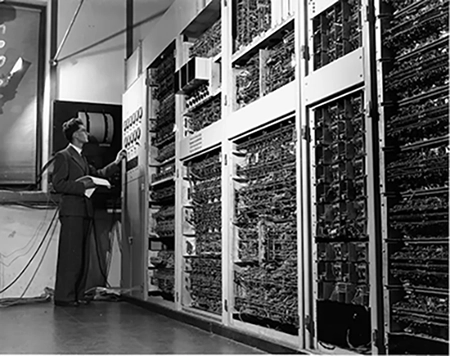

redesign af hjemmeside
I denne opgave skulle vi gå i grupper af fire, og finde en virksomhed, hvis hjemmesiden vi vil redesigne for at skabe en bedre brugeroplevelse. Her fandt vi Ark Books, som er en international non-profit frivillig-dreven boghandel, som ligger på Møllergade tæt på KEA. Undervejs i denne opgave fik jeg kendsskab til værktøjer som Git, Github og Netlify, samt SCRUM og heraf Trello som hjalp med at overskueliggøre diverse opgaver.

Før
Ark Books nuværende site var meget forvirrende og havde utroligt mange undersider – vi lavede et sitemap og en funktionalitetsliste, for at skabe et overblik over sitets brugerrejser og kom frem til der var tre forskellige ”about us” sider og to sider med kontaktoplysninger. Ud fra det vil vi kombinere nogle af disse mange sider, som havde relation til hinanden, man kunne nøjes med 5-6 sider. Jeg og en anden lavede heuristisk test af det nuværende site, og fandt problemer med konsistens og standard, samt æstetik og minimalistisk design.
processen
research
Ved hjælp af desk-research og interview, tydeliggjorde vi butikkens formål ved at undersøge afsender og målgruppe, samt butikken USP. Vi lavede et styletile over den nuværende side, og kunne tydeligt se at sidens stil ikke stemte overens med butikkens fysiske udtryk og den løsning, som de ville tilbyde.
BERT-test & USP
Vi udførte en BERT-test af den nuværende løsning, som gav indblik i at størstedelen af brugere ser siden som kedelig, kølig, forældet og hældende mod utroværdigt - hvilket strider imod de indsigter vi fik ud fra vores research om butikkens formål og USP.
styletile
Vi satte et styletile sammen ud fra hver vores moodboards, i en kombination med butikkens fysiske udseende udtrykt med en mørkeblå farve og tegninger fra vinduesparti.
Crazy 8's & wireframes
Ud fra det gamle sitemap kreerede vi et nyt, hvorefter vi fordelte siderne. Jeg fik både ”Events” og ”Our Book”, som jeg lavede Crazy 8's til og herefter wireframes. Min opgave var overordnet disse sider, men vi hjalp hinanden, hvis man fik brug for det.
formular
Da det nuværende site, har så mange steder at komme i kontakt med boghandleren, valgte jeg at lave en form så man kunne nemt udfylde, ved blot at skrive sit navn, email og derefter den besked man vil sende. I dette forløb, lærte vi også om netlify som kan håndtere formularer, og om de forskellige formular HTML-tags. Jeg havde dog i tema 3 allerede kastet mig ud i at lave en formular med min ”Join Klubben”-side.
video interview
Udover mine to sider, redigerede jeg den lange video til siden, som vi havde besluttet skulle være et interview til ”Our Story”-siden, hvis formål er at tydeliggøre Ark Books USP. Hertil havde vi sammen forberedt en video-synopsis, en logline og storyboard, så alle var enige om det endelige produkt.
Efter
På baggrund af vores tests og research, har vi skabt et nyt site til Ark Books som giver et bedre udtryk for boghandlerens koncept, samt skaber en nemmere og mere overskuelig oplevelse for brugeren.